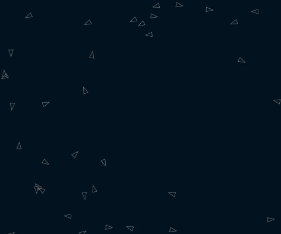

逃避行動
実行例
 実行結果を見る
ソースコード
基本
TypeScript
100 匹 ver
TypeScript
解説/アルゴリズム
export function flee(v: Vehicle, target: p5.Vector) {
const desiredVelocity = p5.Vector.sub(target, v.position);
desiredVelocity.limit(v.maxSpeed);
const force = p5.Vector.sub(desiredVelocity, v.velocity);
v.acceleration.sub(force);
}
逃避行動(flee)は、引数で渡した位置からなるべく離れようとする行動です。